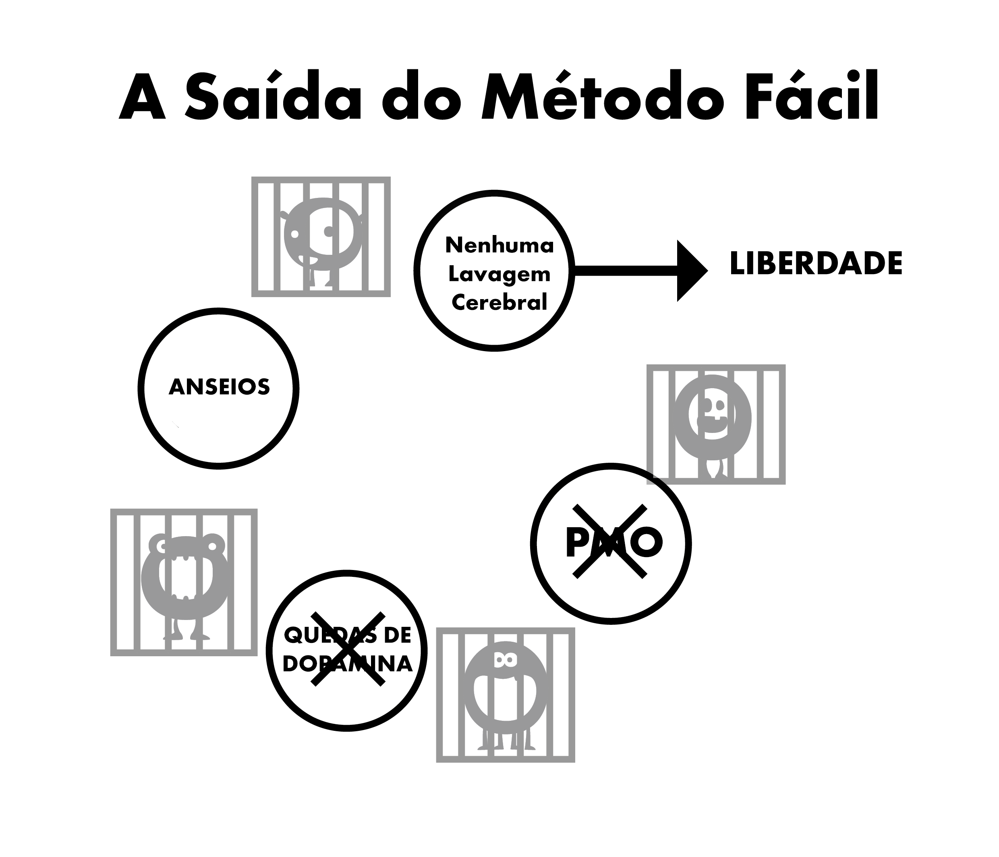

Capítulo 6 Características da Lavagem Cerebral
O grande monstro da armadilha que é a pornografia é criado através da culminação de vários aspectos, incluindo forças da sociedade, mídias, amigos e a narrativa interna do próprio usuário. A falha em desconstruir essas falácias enquanto se usa o método da força de vontade eventualmente leva a sentimentos de privação, levando o usuário de volta à armadilha. A desconstrução do valor imaginário da pornografia é crucial para obter sucesso com o método e permite que você perceba onde está sendo roubado.
É de extrema importância notar a ligação entre lavagem cerebral e medo. É o medo de sentir sintomas de abstinência futuros que cria as fissuras. O próprio medo é a fissura. Pense em quando você teve sintomas de abstinência como mãos suando, falta de ar, problemas ao dormir e incapacidade de pensar corretamente. Agora pense em situações similares nas quais você também teve esses sentimentos: entrevistas de emprego, ansiedade perto de uma pessoa atraente, falar em público etc. Esses são os mesmos sintomas de ansiedade que o medo causa. De maneira simples, como uma droga física pode viciar pessoas meses depois de parar? Deve ser um problema mental, correto?
6.1 Estresse
Não somente grandes tragédias na vida, mas também estresses menores levam o usuário à área proibida e “insegura” que anteriormente havia sido rejeitada. Estresses incluindo socialização, chamadas telefônicas, ansiedades de uma dona de casa com filhos pequenos, e muitos outros. Vamos usar chamadas telefônicas como um exemplo, particularmente para um empresário. A maioria das chamadas não são de clientes satisfeitos ou seu chefe te elogiando, logo há uma espécie de hostilidade. Chegar em casa para uma vida mundana em família, de crianças gritando e demandas emocionais da parceira, faz com que o usuário – se ele já não o estiver fazendo – fantasie com o alívio que a pornografia promete naquela noite. Eles inconscientemente sofrem sintomas de abstinência, e estão munidos apenas de mecanismos e estratégias ineficazes para a redução do estresse, fazendo com que estejam despreparados para lidar com a piora do aborrecimento. Parcialmente aliviando a fissura ao mesmo tempo que o estresse normal, com o pornô o sofrimento total é brevemente reduzido e o usuário consegue um auxílio temporário. O auxílio não é uma ilusão, o usuário realmente se sente melhor que antes, mas ele está mais tenso do que estaria se não fosse um usuário.
O exemplo seguinte não foi escrito para te chocar, O Método Fácil não promete um tratamento assim, mas é para enfatizar que a pornografia destrói seus nervos ao invés de relaxá-los.
Tente imaginar chegar a um estado em que você está impossibilitado de se excitar, até mesmo com uma pessoa extremamente atraente e sexy. Por um momento, pause e visualize uma vida onde uma pessoa amável e charmosa tem de competir e fracassar com as atrizes pornô virtuais ocupando seu “harém” para obter sua atenção. Imagine o esquema mental de uma pessoa que, ao receber esse aviso, continua a usar e morre sem ter um sexo real com essa parceira charmosa e totalmente disposta. É fácil tratar essas pessoas como estranhos, mas histórias como essas não são falsas. Isso é o que a horrível novidade da droga pornográfica faz com seu cérebro. Quanto mais você percorre a vida fazendo uso da pornografia, mais sua coragem é enfraquecida e mais você é iludido a pensar que pornô está fazendo o contrário.
Você já foi tomado por pânico quando repentinamente o WiFi para de funcionar ou está lento? Não-usuários não sofrem isso, pois a pornografia online causa esse sentimento. Conforme você vive, ela destrói sistematicamente seus nervos e sua coragem, fazendo com que o DeltaFosB forme poderosos “tobogãs” neurais em seu rastro, destruindo progressivamente sua habilidade de dizer não. No estágio em que a virilidade foi morta, o usuário acredita que a pornografia é seu novo parceiro e é incapaz de encarar a vida sem isso.
A pornografia não está aliviando seus nervos: ela lentamente os está destruindo. Um dos grandes ganhos de quebrar o vício é a volta da sua confiança e autoconfiança naturais.
Não há necessidade de se avaliar baseando-se na sua habilidade de satisfazer uma parceira. Isso não é liberdade. Mas essa liberdade não pode ser obtida ao continuar a lubrificar o tobogã de dopamina em meios que minem sua felicidade e libido ao repetir o mesmo comportamento destrutivo.
6.2 Tédio
Se você é como muitas pessoas, assim que sobe na cama, sem nem precisar pensar, você já entra no seu site favorito. Tornou-se uma algo automático. Da mesma forma, a pornografia aliviar o tédio é outra falácia, pois o tédio é um estado mental; ele ocorre quando você foi privado por um longo tempo ou está tentando reduzir o consumo.
A situação verdadeira é que quando você é viciado no estímulo supranormal da pornografia e, em seguida, tenta se abster, parece que há algo faltando. Se você tem algo para ocupar sua mente que não é estressante, você pode passar por longos períodos de tempo sem ser incomodado com a ausência da droga. No entanto, quando você está entediado não há nada para tirar sua mente disso, então você alimenta o monstro. Quando você está se entregando e não está tentando parar ou reduzir, até mesmo disparar a guia anônima se torna subconsciente. Este ritual é automático; Se o usuário tentar lembrar as sessões da última semana, eles são capazes de se lembrar de uma pequena parte delas, como a última ou a sessão após uma longa abstinência.
A verdade é que a pornografia aumenta indiretamente o tédio porque os orgasmos fazem você se sentir letárgico e, em vez de realizar uma atividade energética, os usuários tendem a preferir relaxar, entediados, e aliviar suas dores de abstinência. Contrariar a lavagem cerebral é importante porque os usuários tendem a assistir pornografia quando entediados. Nossos cérebros são forçados a interpretar pornô como algo interessante. Da mesma forma, também sofremos lavagem cerebral para acreditar que sexo – mesmo sexo ruim – auxilia no relaxamento. É um fato que, quando tristes ou sob estresse, os casais querem fazer sexo. Na ausência de discriminação entre sexo sensorial e propagativo, observe a rapidez com que vocês querem se afastar um do outro após o orgasmo obrigatório ser alcançado. Se o casal simplesmente decidisse se abraçar, conversar ou se acariciar e então ir dormir, eles se sentiriam aliviados.
6.3 Concentração
Masturbação e sexo não ajudam na concentração. Quando você está tentando se concentrar você automaticamente tenta evitar distrações. Portanto, quando um usuário quer se concentrar, eles nem sequer pensam: abrem automaticamente o navegador, alimentando o pequeno monstro e terminando parcialmente o desejo. Depois terminam com o assunto em questão, já esquecendo que eles viram pornografia. Após anos de dopamina inundando as mudanças neurológicas, as habilidades como o acesso a informações, planejamento e controle de impulsos acabam sendo afetadas.
Você também é conduzido a procurar novidade na próxima sessão, pois as mesmas coisas não geram mais dopamina e opioides suficientemente. Assim, você terá que percorrer as ruas da Internet em busca de novidade, lutando contra o impulso de atravessar a linha em direção a materiais chocantes. Isso, por sua vez, gera mais estresse e deixa você mais vazio após terminar.
A concentração também é afetada negativamente conforme os receptores de dopamina são diminuídos devido à tolerância natural aos grandes picos de excitação, reduzindo o benefício dos influxos menores de dopamina dos nossos desestressores naturais. Sua concentração e inspiração serão muito impulsionadas conforme esse processo é reduzido. Para muitos, o aspecto de concentração os impede de ter sucesso com os métodos que usam força de vontade. Eles poderiam aguentar a irritabilidade e o mau humor, mas o fracasso em se concentrar em algo difícil após a remoção da muleta arruína muitas pessoas.
A perda de concentração que os usuários sofrem quando tentam escapar não é devido à ausência de sexo, muito menos pornografia. Você tem bloqueios mentais quando você é viciado em algo, e o que você faz quando tem um bloqueio mental? Você abre o navegador – o que não cura o bloqueio. Então o que você deveria fazer? Você deve fazer o que você tem que fazer, seguir em frente assim como os não-usuários fazem.
Quando você é um usuário, a causa nunca é culpada. Os usuários nunca têm disfunção sexual, apenas uma “falha corriqueira”. Quando você para de usar, a culpa de tudo o que dá errado é atribuída ao fato de ter parado. Agora, quando você tem um bloqueio mental, em vez de apenas continuar a fazer o que estava fazendo, você começa a dizer “Se eu pudesse abrir meu harém agora, isso resolveria todos os meus problemas”. Você então começa a questionar sua decisão de parar e de escapar da escravidão.
Se você acredita que a pornografia é um auxílio genuíno à concentração, preocupar-se com isso garantirá que você será incapaz de se concentrar. É a dúvida, e não os sintomas físicos de abstinência, que cria o problema. Lembre-se sempre: é o usuário que sofre os sintomas, e não os não-usuários.
6.4 Relaxamento
A maioria dos usuários acha que a pornografia ajuda a relaxar. Isso é mentira. A busca frenética para obter a droga naqueles “becos escuros da Internet” e a luta interna do impulso para não atravessar a linha vermelha certamente não soa como uma atividade muito relaxante.
À medida que a noite passa depois de uma viagem para um novo lugar ou de um longo dia, nós nos sentamos para relaxar, aliviamos nossa fome, sede e ficamos completamente satisfeitos. O usuário não está. Eles têm outra fome para satisfazer. Os usuários pensam em pornografia como a cereja do bolo, mas na realidade é o “pequeno monstro” que precisa de alimento. A verdade é que o viciado nunca pode relaxar completamente e conforme o tempo passa, isso fica exponencialmente pior. Por exemplo, um comentário online de um ex-usuário:
“Eu realmente acreditei que havia um demônio maligno em mim. Agora eu sei que havia. No entanto, não era uma falha inerente no meu caráter, mas o pequeno monstro que estava criando o problema. Eu pensei que tinha todos os problemas no mundo, mas quando olho para trás eu me pergunto onde todo esse estresse gigantesco estava. Em tudo na minha vida eu estava no controle, a única coisa me controlando era a escravidão da pornografia. A coisa triste é que até hoje eu não consigo convencer meus filhos que era a escravidão que me fez ser tão irritável.”
Toda vez que vejo viciados em pornô tentando justificar seu vício a mensagem é: “ah, isso me ajuda a relaxar.” Considero o relato de um pai solteiro cujo filho de seis anos queria dormir junto na sua cama à noite depois de um filme assustador, mas o pai recusou para que pudesse ter sua sessão pornográfica e ficar usando por horas.
Aqui está outra analogia com fumantes: há alguns anos, as autoridades da adoção ameaçavam impedir que os fumantes adotassem crianças. Um homem ligou, irado. “Você está completamente errado”, ele disse. “Eu posso lembrar de quando eu era criança. Se tivesse um assunto difícil para tratar com minha mãe, eu esperava até que ela acendesse um cigarro porque aí ela estaria mais relaxada. Por que o homem não conseguia falar com sua mãe quando ela não estava fumando?
Por que alguns usuários ficam tão estressados quando não conseguem sua dose de pornografia, mesmo depois de fazerem sexo de verdade? Uma história on-line detalha um homem que trabalha no campo de publicidade e que tinha lindas mulheres disponíveis para encontros a qualquer momento, mas perdeu o interesse em levá-las para jantar pois a pornografia era muito mais fácil: não envolvia gasto com restaurantes e não havia possibilidade de um ‘não’ de sua pretendente no final de uma noite. Por que se incomodar quando o seu pequeno monstro o mantém desejando o baixo risco e altas chances de recompensa na ponta dos dedos ao chegar em casa?
Por que os não-usuários estão completamente relaxados? Por que os usuários não são capazes de relaxar sem uma dose por um dia ou dois? Leia sobre a experiência de um usuário que fez o juramento de abstinência e desistiu, e você notará a luta contra as tentações. Eles ficam claramente tensos quando não mais possuem permissão para ter o “único prazer” que eles possuem o “direito de desfrutar”. Eles se esqueceram do que é estar completamente relaxado. A pornografia pode ser comparada a uma mosca sendo pega em uma planta carnívora. No começo, a mosca está comendo o néctar, mas em algum estágio imperceptível a planta começa a comer a mosca.
Não é hora de você sair da planta?
6.5 Energia
A maioria dos usuários está ciente dos efeitos progressivos que a pornografia e a escalabilidade da busca por pornografia têm em seus sistemas de recompensas cerebrais e seus sistemas sexuais. No entanto, eles não estão cientes do efeito que isso possui em seus níveis de energia.
Uma das sutilezas da armadilha pornográfica é que os efeitos que ela nos causa fisicamente e mentalmente acontecem de forma tão gradual e imperceptível que não estamos cientes deles e em vez disso passamos a considerá-los normais. O efeito é semelhante ao dos maus hábitos alimentares: olhamos para pessoas grosseiramente acima do peso e nos perguntamos como elas se permitiram chegar a esse estado. Mas suponha que isso tenha acontecido da noite pro dia: você foi para a cama magro, com os músculos marcados e nenhuma grama de gordura em seu corpo, e acorda e se vê gordo, inchado e barrigudo. Ao invés de acordar se sentindo totalmente descansado e cheio de energia, você se sente miserável, letárgico, e mal consegue abrir seus olhos.
Você seria atingido por pânico, se perguntando qual doença terrível que você obteve durante a noite. Ainda assim, a doença é exatamente a mesma. O fato de levar vinte anos para chegar lá é irrelevante. Com a pornografia é o mesma coisa. Se fosse possível transferir imediatamente sua mente e corpo, para lhe dar uma comparação direta, para o estado em você se sentiria após parar com a pornografia por apenas três semanas, isso seria o suficiente para convencê-lo. Ao se perguntar se você realmente se sente tão bem, você não apenas se sentiria mais saudável e com mais energia, mais teria muito mais autoconfiança e maior capacidade de se concentrar. Você se perguntaria, “como me deixei cair tão fundo?”
Falta de energia, cansaço e tudo relacionado à pornografia é varrido para baixo do tapete do “envelhecimento”. Amigos e colegas que também vivem estilos de vida sedentários acrescentam ainda mais à normalização desse comportamento. A crença de que a energia é coisa exclusiva de crianças e adolescentes, e que a velhice começa por volta dos vinte anos é outro sintoma da lavagem cerebral, assim como estar inconsciente da piora nos hábitos alimentares e de exercícios físicos são efeitos da dessensibilização à dopamina.
Logo depois de parar com a pornografia, esse sentimento nebuloso e estranho vai embora. A questão é que com a pornografia você está sempre debilitando sua energia e, nesse processo, adulterando a química do seu sistema límbico. Diferentemente de parar de fumar, onde o retorno da sua saúde física e mental é gradual, parar com a pornografia lhe dá excelentes resultados já no primeiro dia. Matar o “pequeno monstro” e fechar as “tobogãs” leva um pouco de tempo, mas a recuperação do seu centro de recompensa não é nada como a lenta descida para o buraco. Se você está passando pelo trauma do método de força de vontade, qualquer ganho de saúde ou energia será destruído pela depressão que você passará. Infelizmente, não é possível para o Método Fácil transformar imediatamente sua mente atual na sua mente de daqui três semanas, mas isso você pode fazer! Você sabe instintivamente que o que você está sendo dito está correto, tudo que você precisa fazer é usar sua imaginação!
6.6 Sessões Antes das Noite Sociais
Isso é uma desinformação que parece fazer sentido, mas não faz. Para controlar seu apetite, você vai comer em casa antes de sair para um restaurante ou uma festa? Isso é o que você está fazendo com sessões de pornografia antes de sair à noite, o que te faz parecer cansado e te tira do seu melhor estado. A adoção generalizada de técnicas de pick-up introduziu a pressão de pegar mulheres em número, como se fosse um jogo em que se busca por pontos. Tentar afogar as borboletas do seu estômago com pornografia e substâncias só tornará o problema em algo pior a longo prazo. Pessoalmente, eu gosto de um pouco de ansiedade para me manter focado e envolvido, e se cansar mentalmente e fisicamente por meio do orgasmo não vai ajudar.
A pornografia antes da socialização é ocasionada por duas ou mais razões comuns para que nos levam à busca de prazer ou de muletas: as interações em seu núcleo social são tanto estressantes e quanto relaxantes. Isso pode parecer ser uma contradição, mas qualquer forma de socialização pode ser estressante – mesmo com amigos –, mesmo querendo ser você mesmo e estar completamente relaxado. Há muitas ocasiões que possuem vários fatores presentes a qualquer momento. Tome o ato de dirigir como exemplo, já que afinal, sua vida está em jogo. É estressante; exige concentração por um período relativamente longo de tempo. Você não precisa estar ciente desses fatores, seu subconsciente já está recebendo a mensagem. Encontrar-se preso em engarrafamentos ou entediado em grandes rodovias pode te levar a prometer a si mesmo uma sessão ao chegar em casa.
Outro bom exemplo está em ir a um primeiro encontro. Sua mente joga perguntas sobre a pessoa com a qual você está prestes a se encontrar. Então, depois de conhecer a pessoa de carne e osso, se o entusiasmo começar a desaparecer, você começa a se sentir relaxado demais, então se sentirá culpado por se sentir assim. O cabo de guerra começou: “eu quero sexo ou me tire daqui o mais cedo possível”, preparando você para assistir pornografia depois do encontro.
Mesmo que o encontro tenha sido bom e, horas depois, você está de volta em sua casa, não importa de que forma tenha sido, você não ficará satisfeito se o seu único objetivo for a busca do orgasmo. Em outras ocasiões você dirige para casa solitário, sendo seu único pensamento o seu harém on-line, em vez de se parabenizar por seus esforços. Você pode apostar que alguém nesta situação terá uma sessão ao chegar em casa. Muitas vezes são de noites como essas que nós vamos sentir falta quando contemplarmos a ideia de parar de consumir pornografia. Nós achamos que a vida nunca será tão agradável novamente, pois temos que lidar com o desconforto e o vazio. Na verdade, é o mesmo princípio em funcionamento: as sessões simplesmente fornecem alívio dos sintomas de abstinência. Em algumas situações sentimos mais necessidade do que em outras, e preparamos o tobogã para a próxima descida.
Que isso fique claro: não é a pornografia que é especial, é a ocasião. Uma vez que a necessidade de pornografia é removida, situações agradáveis se tornarão ainda mais agradáveis e situações estressantes serão menos estressantes.
